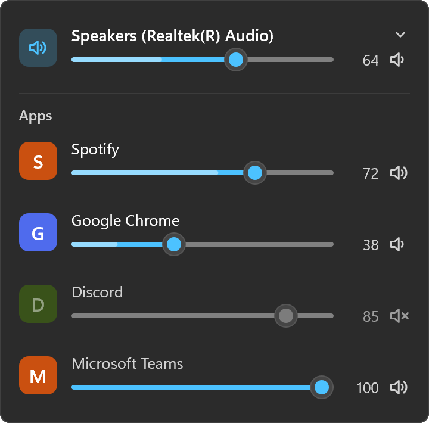
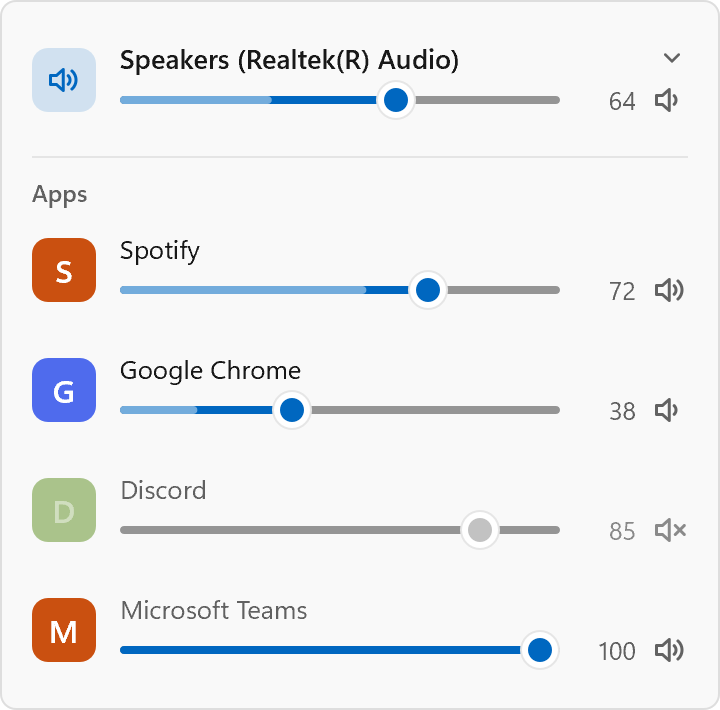

The call is too quiet and the music is too loud
macOS still has no per-app volume at all, and Windows hides its mixer two clicks deep in Settings. Sonus puts every app's level one click from the tray.
Every app, its own slider
Each app playing sound, with its own icon, a slider, a live level meter and a mute button. Chrome's twenty tabs are one row.
Switch the output
Headphones, speakers, the monitor: pick the device from the top of the panel, or from the menu without opening it.
The wheel works
Scroll over any row to nudge it, the way you'd turn a knob. Click an app's icon to mute it.
Looks like it belongs
Fluent sliders on Windows 11 and frosted glass on macOS, in your accent colour, following the light or dark taskbar.
Remembers on macOS
An app you turned down stays down the next time it plays. Windows already remembers that for itself.
Small
A single 0.7 MB app with nothing else to install. Asleep in the tray it uses a few MB and no measurable CPU.
In both themes
Drawn by the app itself, the way it looks in the tray.


How it works
On Windows, every app that plays sound opens an audio session, and every session already has its own volume. Sonus drives those sessions through WASAPI, the same machinery as Windows' own Volume Mixer, so a level you set is still there after the app restarts.
On macOS there is no such thing, so Sonus builds it. An app whose level you change is captured with a Core Audio process tap, which silences the original, and its sound is played back at the level you chose. An app you never touch plays straight to the speakers as before. This needs macOS 14.2 or later and the System Audio Recording permission, which Sonus asks for the first time it is needed.
If Sonus quits, macOS removes its taps with it: an app goes back to full volume, never to silence. Nothing Sonus hears is recorded or leaves your computer.
From a terminal
On Windows, the same levels without opening the panel.
$ sonus list Speakers (Realtek(R) Audio) 64% Google Chrome 38% playing Spotify 72% playing System sounds 100% $ sonus set spotify 30 Spotify: done $ sonus mute chrome Google Chrome: done
Install
| Windows installer | Sonus-Setup.exe |
| macOS | Sonus.dmg (Apple silicon and Intel) |
| Homebrew | brew install --cask kidchenko/tap/sonus |
Windows 10 or later, or macOS 14.2 or later for app volumes. It needs nothing else installed.